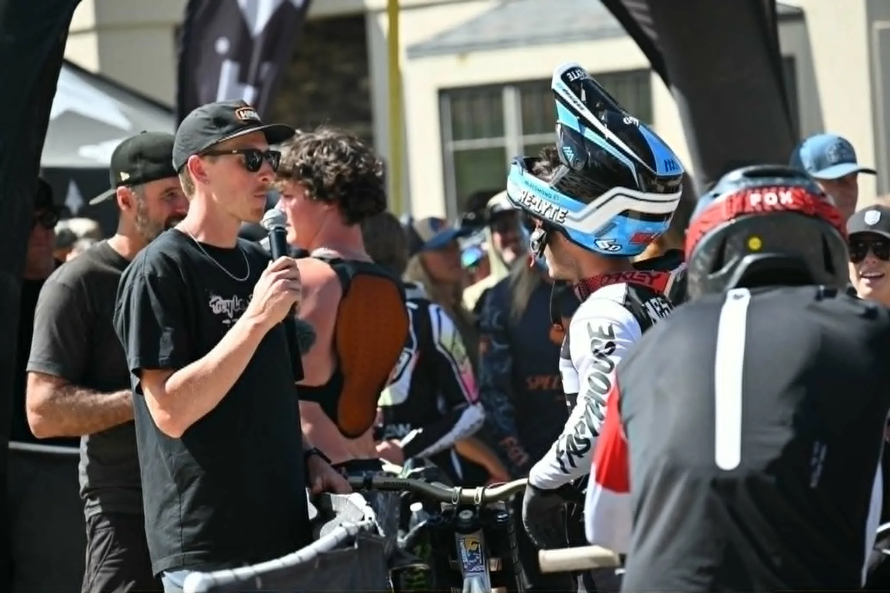
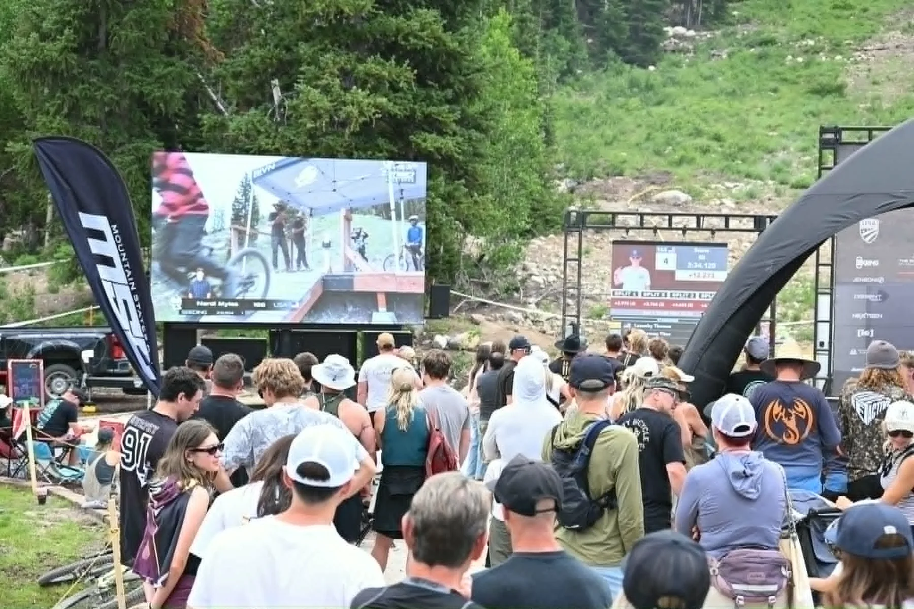

Multi-Camera Production
Camera planning, operators, switching, monitoring, routing, recording, and show control for live events.
Colorado live broadcast production
Down The Wire Productions provides multi-camera live broadcast production for sports, outdoor events, festivals, corporate events, and brand activations across Colorado and nationwide.

Full broadcast workflow
We can manage the complete show or integrate with an existing crew. Every system is designed around the venue, audience, distribution platforms, sponsor requirements, and production goals.
Camera planning, operators, switching, monitoring, routing, recording, and show control for live events.
Replay workflows, score and information graphics, sponsor inventory, hosts, announcers, and audience-facing storytelling.
Online distribution, venue screens, program feeds, field networking, signal transport, and practical redundancy.

Built for real venues
Outdoor and live-event production often means long cable paths, weather, changing schedules, limited infrastructure, moving audiences, and difficult camera positions. Down The Wire plans for those realities from preproduction through strike.
Talk Through Your Event